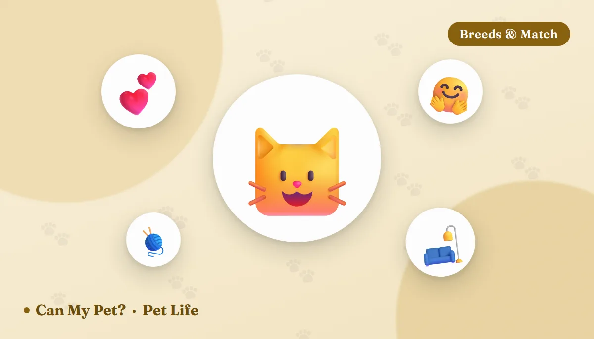

The 12 Most Affectionate Cat Breeds — and What "Affectionate" Really Means

"Affectionate" turns out to mean four completely different things once you start watching cats closely. There's the lap cat who settles on you and stays. The shoulder cat who wants to be carried. The shadow who supervises every room you walk into without ever asking to be touched. And the head-butter who greets you at the door, rubs your shin, then goes back to the windowsill perfectly satisfied. All four are love. Only one of them is what most people picture when they go looking for a cuddly breed — which is why so many owners end up surprised, in both directions.
What makes a cat "affectionate" in the first place?
Feline behaviour sources keep coming back to three ingredients. The first is that early socialisation window: gentle, varied handling by several different people in the first weeks of life shapes how safe human hands feel for the rest of the cat's life, and it closes early. The second is genetics — boldness is partly heritable, and breeds selected for generations as companion cats rather than working cats do tend to start from a friendlier baseline. The third is the one owners actually control: whether contact is the cat's choice. Cats who are picked up on demand learn to avoid hands. Cats who are invited learn to come.
Worth knowing before you read the list: the breeds famous for devotion are also the breeds most likely to struggle alone. Affection and neediness are the same trait viewed from different ends of the working day.
The 12 most affectionate cat breeds
1. Ragdoll Classic lap cat
The breed that named itself: many Ragdolls relax completely — go floppy — when lifted, and they'll follow their people between rooms, wait by the door and flop against you on the sofa. Big, placid and indoor-only by temperament, with a semi-long coat that wants brushing a couple of times a week.
Best for: anyone who genuinely wants a cat on them, not just near them.
2. Sphynx Heat-seeking velcro cat
Hairless, warm-blooded and always a little cold, the Sphynx wants body contact the way other cats want sunbeams — under the duvet, inside a jumper, draped across a keyboard. Outgoing, clownish and relentlessly social. The trade-off is upkeep: skin needs regular bathing and ear cleaning, and they must stay indoors and warm.
Best for: people at home a lot who want maximum contact and don't mind the grooming routine.
3. Burmese The people magnet
Burmese are often described as the most dog-like of cats: they greet visitors, ride around on shoulders, and stay playful and lap-seeking well into old age. Short, low-maintenance coat, strong voice, very little interest in being left out of anything.
Best for: busy, sociable households where someone is usually home.
4. Siamese Chatty shadow
Intensely bonded and famously talkative, a Siamese will narrate your day and expect answers. Affection here is constant involvement rather than quiet cuddling — and the flip side is a real tendency toward separation-related distress if the house is empty for long stretches.
Best for: owners who want conversation and can offer company or a well-matched companion cat.
5. Tonkinese Burmese warmth, Siamese wit
A Burmese–Siamese cross breed that lands neatly between its parents: sociable and lap-happy like the Burmese, curious and vocal like the Siamese, but usually a touch less demanding than either. Sturdy, playful and quick to befriend strangers.
Best for: a middle path — affectionate without being overwhelming.
6. Maine Coon The gentle supervisor
America's native longhair is enormous, mellow and devoted, but its affection style is companionship rather than clinginess — it wants to be in the room with you, often trilling commentary, and may or may not want the lap. Patient with children and other pets; that magnificent coat needs real grooming time.
Best for: families who want a big, easygoing presence rather than a permanent lap occupant.
7. Birman Quietly devoted
Silky, blue-eyed and notably gentle, Birmans attach strongly to their people without the volume of the oriental breeds. They settle nearby, join whatever's happening, and adapt well to other pets. The single-layer coat mats far less than most longhairs.
Best for: calm homes that want closeness without drama.
8. Bombay The tiny panther
A sleek black cat bred to look like a miniature leopard and behave like a heat-seeking cuddle missile. Bombays are famous lap-sitters and blanket-burrowers, happy to be carried and quick to attach to one favourite human in particular.
Best for: one-person households and anyone who wants a shadow with an off switch.
9. Devon Rex Shoulder cat
Big ears, curly coat, elfin face and a personality that never quite grows up. Devon Rexes perch on shoulders, sleep under covers and involve themselves in everything. Like the Sphynx they're warmth-seeking and thrive on company.
Best for: playful homes that want a mischievous, permanently attached companion.
10. Scottish Fold Sweet — but read this first
Famously placid and people-oriented, Scottish Folds like to be where their humans are. Important caveat: the folded ear comes from a cartilage mutation linked to painful degenerative joint disease, and several veterinary bodies and breed registries have raised welfare concerns about breeding for it. If this is the look you love, talk to your vet first, and consider a straight-eared cat of similar temperament.
Best for: owners who will research the health issues properly before committing.
11. Persian Serene lap cat, high upkeep
Persians are quiet, undemanding and happy to spend the afternoon on a lap — affection at a low volume. Two honest caveats: the coat needs daily brushing, and flat-faced (brachycephalic) breeding is associated with breathing, eye and dental problems. Look for a moderate, less extreme face and ask about the breeder's health screening.
Best for: calm, indoor homes prepared for daily grooming and closer veterinary attention.
12. Russian Blue Devoted, on its own terms
The introvert of the list. Russian Blues are reserved with strangers and deeply attached to their own people — they'll shadow you all day, greet you at the door and then sit just out of reach until they've decided it's lap time. Plush coat, low shedding, strong preference for routine.
Best for: quieter households that enjoy a bond they have to earn.
Affection styles: what you're actually signing up for
| Style | What it looks like | Breeds that lean this way |
|---|---|---|
| Lap cat | Settles on you and stays; seeks warmth and contact | Ragdoll, Persian, Bombay, Birman |
| Velcro cat | Wants to be carried, worn, tucked under blankets | Sphynx, Devon Rex, Burmese |
| Chatty shadow | Follows, comments, needs to be included | Siamese, Tonkinese, Maine Coon |
| Slow-burn devotee | Reserved with guests, glued to its own person | Russian Blue, many rescue adults |
How to build affection with the cat you already have
- Let the cat open and close every interaction. Offer a finger at nose height, wait for the head-bump, stop while the cat still wants more.
- Stroke the right places. Head, cheeks, chin and along the neck are welcome; the belly and the base of the tail usually aren't.
- Play daily, briefly. Two or three short wand sessions ending in a "catch" and a small treat build trust faster than any amount of holding. There are more ideas in boredom busters for cats.
- Give it height and hiding places. Counter-intuitively, a cat with somewhere safe to retreat spends more time out in the open, not less.
- Keep routines steady — meals, play and bedtime at predictable times. Cats relax into patterns.
- Try slow blinking. Soft eyes, a deliberate slow blink, look slightly away. Many cats blink back.
Frequently asked questions
What's the single most affectionate cat breed?
Ragdoll, by most lists — but the Sphynx and Burmese are arguably more contact-hungry. If you want a guarantee rather than a probability, adopt an adult whose personality you can already see.
Are male cats more affectionate than females?
Neutered males are often described as slightly more openly sociable, but the effect is small next to individual temperament and early handling. Choose the cat, not the sex.
Do affectionate breeds cope with being left alone?
Less well than average. Sphynx, Burmese and Siamese in particular can develop separation-related problems — excessive vocalising, over-grooming, destructiveness. Plan enrichment, or pick a more independent breed.
Are shelter cats less cuddly than pedigrees?
No — and shelters can usually tell you exactly how an adult cat behaves with people, because they've lived with it. That's more information than any breed description gives you.
Will two cats be less affectionate with me?
Usually not, if they're well matched. Bonded pairs tend to be calmer and better occupied, which often makes them more relaxed around people. See how to introduce a new pet for doing it slowly.
My cat brings me "presents" and sits on my laptop. Is that affection?
It's connection, yes — attention-seeking, scent-sharing and a claim on your space all at once. We unpack the first one in why does my cat bring me gifts?
Sources: Cat Fanciers' Association and The International Cat Association breed profiles for temperament descriptions; International Cat Care and ASPCA guidance on feline socialisation, handling, enrichment and separation-related behaviour; American Association of Feline Practitioners guidance on cat-friendly handling and on pain as a cause of behaviour change; and veterinary welfare statements on brachycephalic conformation and on osteochondrodysplasia in fold-eared cats. Breed descriptions are generalisations — individual cats vary widely. For information only — not veterinary advice. Any sudden change in your cat's sociability, appetite, grooming or litter-box habits should be assessed by your veterinarian.